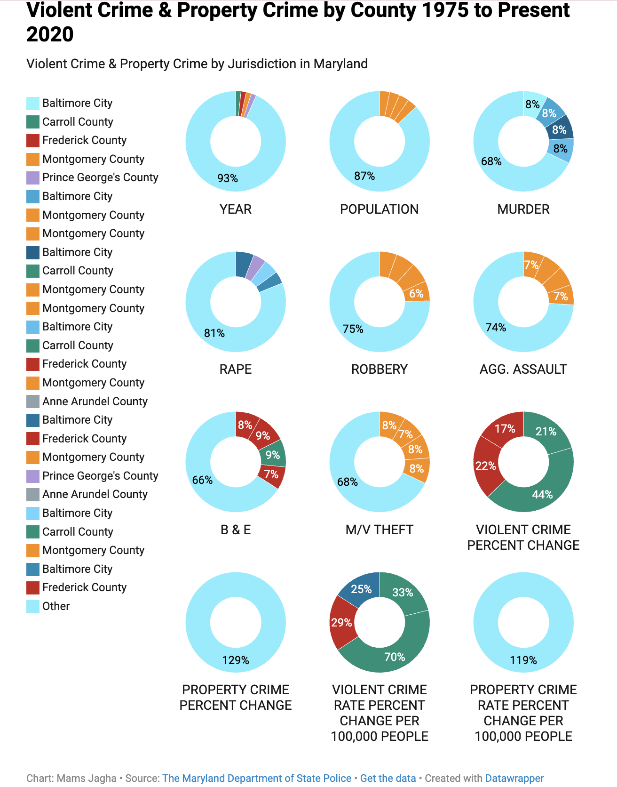
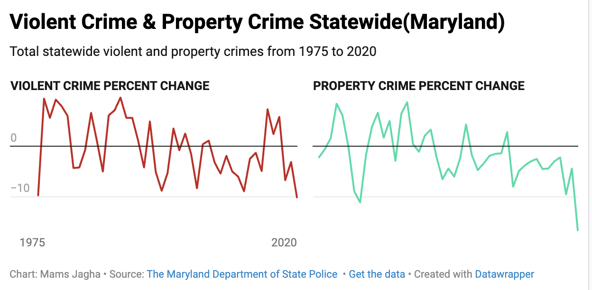

Across Maryland's municipalities, violent crime has fallen significantly since the 1990s. But the data actually reveals that this progress has not been shared across equally. The gap between Baltimore City and smaller municipalities points to something deeper than statistics.
Their Two Trends
Baltimore City started with violent crime totals way higher than any other jurisdiction. While those numbers have come down over time, the decline was not smooth. Periodic spikes and fluctuations in the numbers have suggested that reductions in violent crime have not been steady or fully sustained by law enforcement. However, smaller municipalities tell a different story. Their violent crime levels were always lower to begin with and their decline has been more gradual and consistent. There have also been broader improvements in public safety that appear to be happening across Maryland, but outside of Baltimore, those improvements are more predictable and stable.

Violent Crime & Property Crime by Jurisdiction in Maryland. Photo by: Mams Jagha
Baltimore Is In a Whole Different Category
When you compare Baltimore to the rest of the state, it occupies a different scale. Its violent crime totals are categorically higher than other jurisdictions, which means Baltimore's challenges are structural, not incidental. Some smaller municipalities do show occasional spikes or drops in their data, but those tend to reflect how a handful of incidents can move the numbers dramatically in a town of a few thousand people. According to Nichole Hardy, licensed professional counselor, Baltimore's elevated levels, however, are signs of deeper instability that even affect child and adult mental health and upbringing.

Violent Crime & Property Crime Statewide-Maryland. Photo by: Mams Jagha
Crime Is Shifting
Even as overall crime falls, the changes are nowhere near surface level. In both Baltimore and smaller municipalities, property crime has always made up the majority of total criminal activity, around 70 to 80 percent in Baltimore. But property crime is now declining faster than violent crime. This is resulting in violent offenses that make up a growing share of what remains, particularly in Baltimore. This matters because violent crime has heavier social and psychological costs than property crime. The illusion of a falling total crime number can hide the fact that the crimes still occurring are the ones that hit communities the hardest.
What the Numbers Are Truly Saying
Maryland's crime data tells of uneven progress. These smaller municipalities have seen stable, sustained improvement. Yet, Baltimore has seen a persistence of different crimes that mix to eventually becoming proportionally more violent over time. Factors like economic inequality, and decades of population density are likely to explain why the same statewide trends play out so differently depending on where you live. Simple small term policies that work in smaller communities may simply not be built for what Baltimore is dealing with.
Source
Nichole Hardy, Nicholehardylc@gmail.com, Licensed professional counselor…Turntable Counseling, LLC.
How I found this person: I found this person while researching how violent crimes in areas affect the psyche and mental health. After a multitude of searches I came across an ad for the LLC and narrowed down my search to counselors near me. I located her area and number and then conducted my interview.
How I conducted the interview: I reached out to the LLC first but had no luck in getting a response, so I then found my personal information online and sent her an email in which we scheduled a time to talk. I first explained the purpose of the interview and what her quote would be used for. I asked some conversation questions first then moved into details of my narrative and what she thought about it. I began my questioning and luckily pulled out a quote I believed fit my narrative.